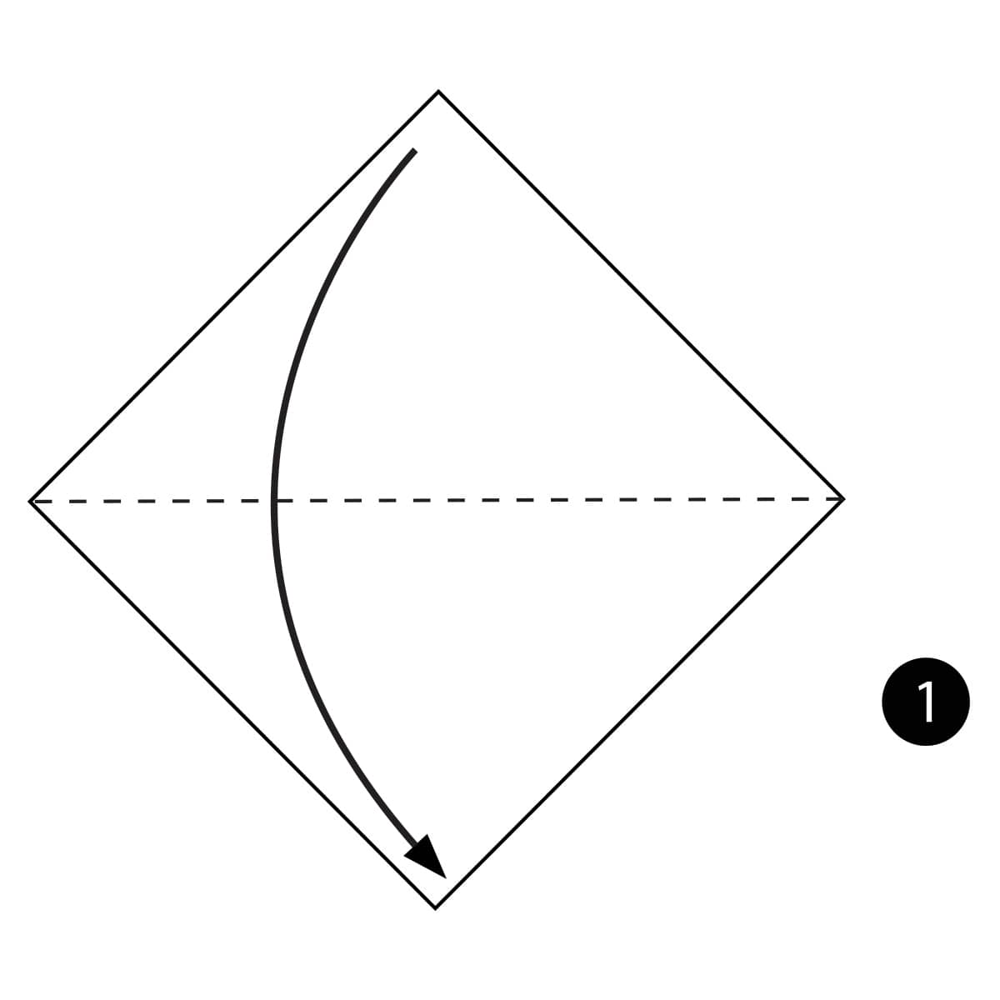
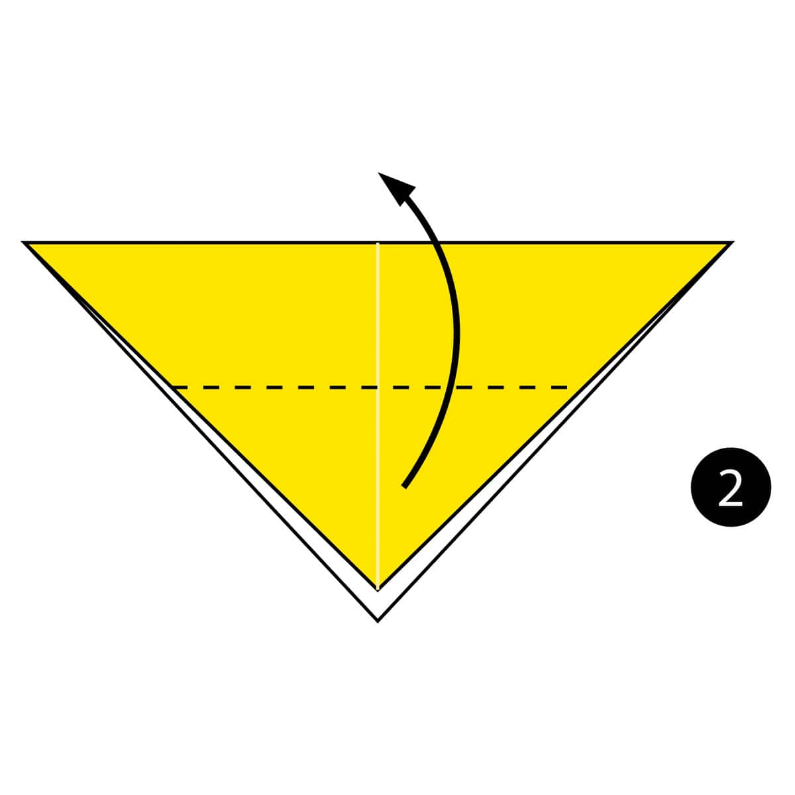
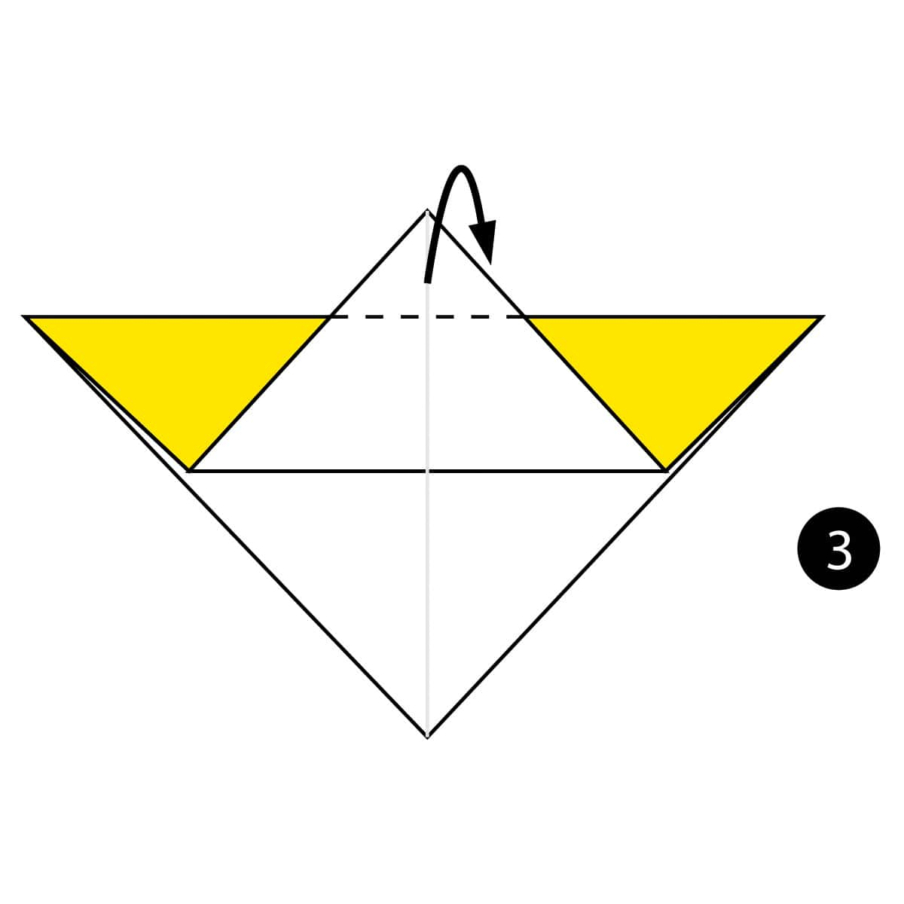
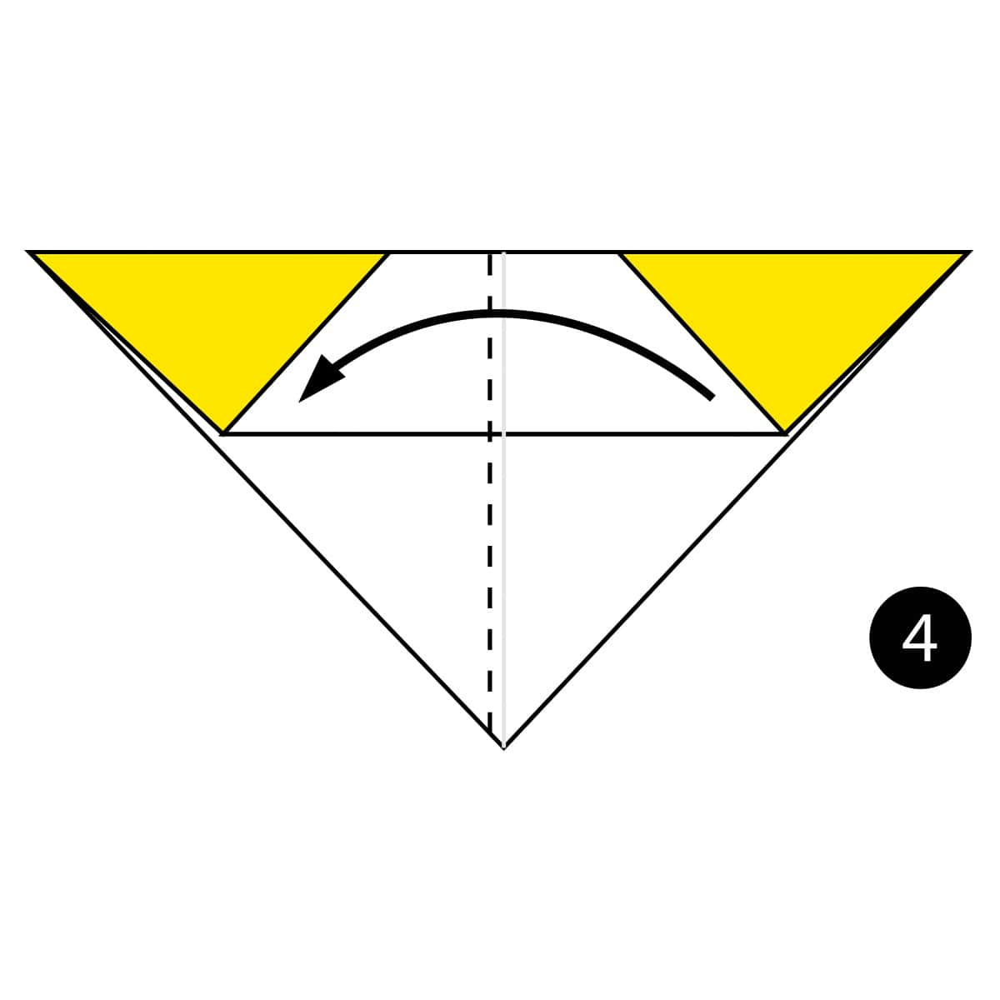
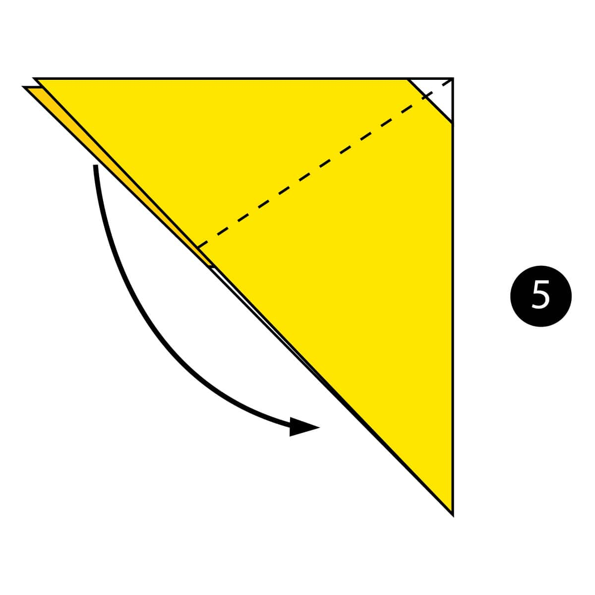
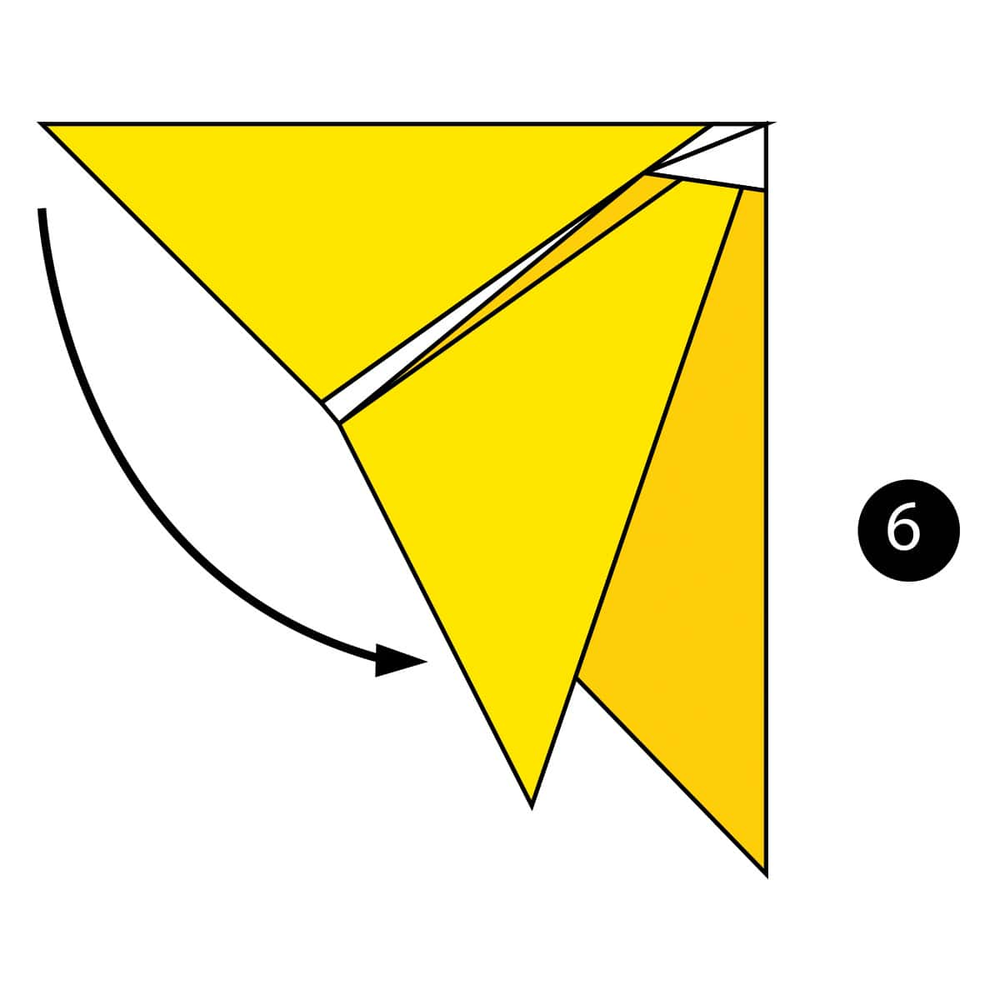
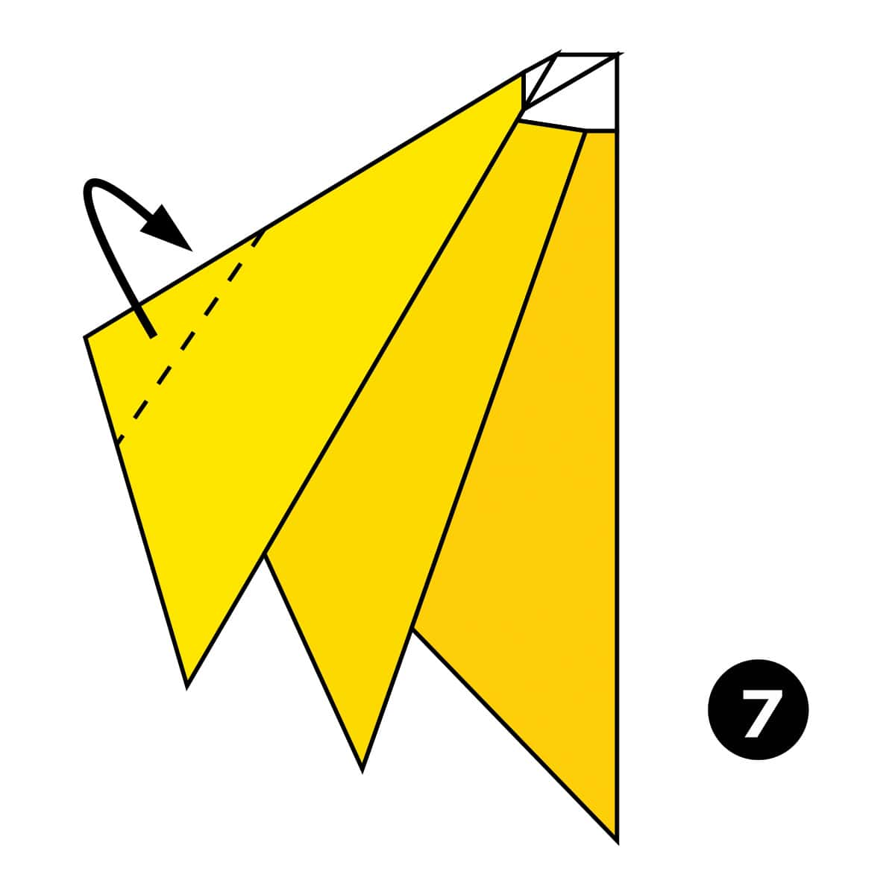
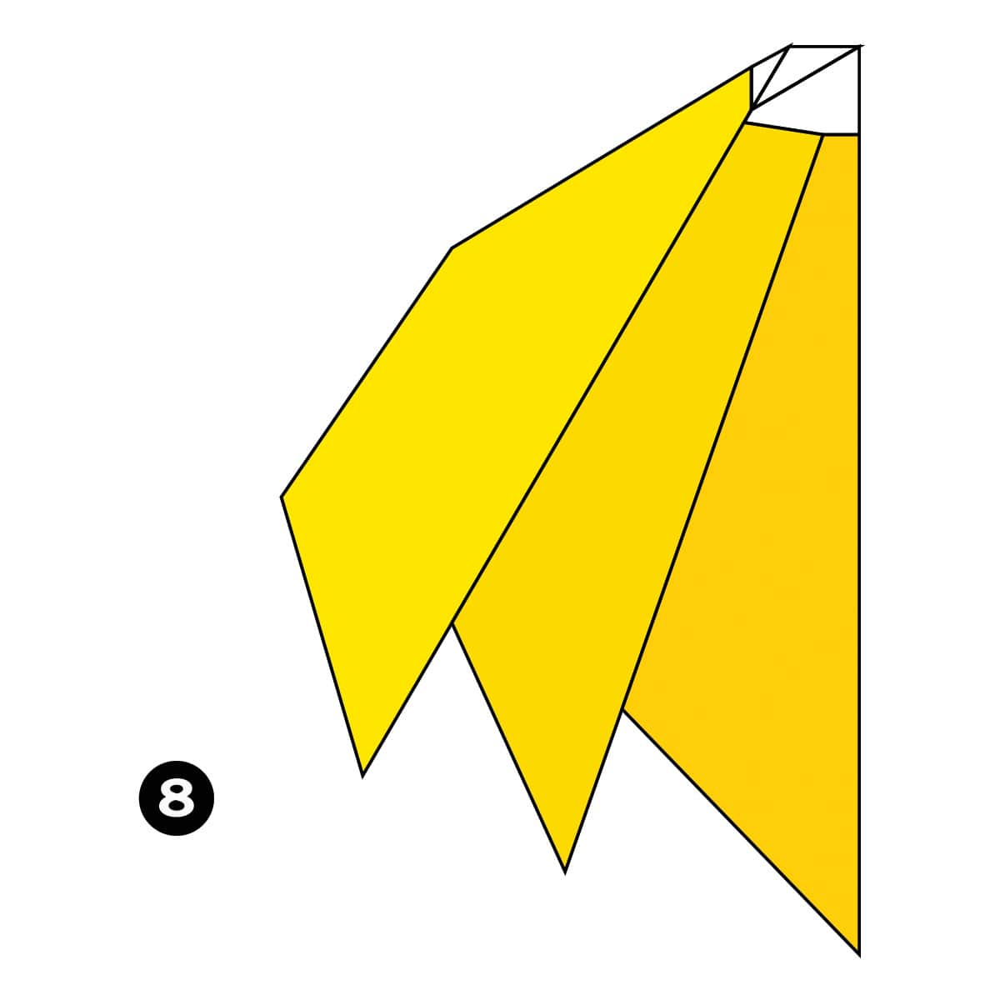

Step 1
Fold the paper in half.

Step 2
Fold the top layer of paper up along the dotted line.

Step 3
Fold the top layer of paper back behind the model along the dotted line.

Step 4
Fold the paper in half along the dotted line.

Step 5
Fold the top flap of paper down along the dotted line.

Step 6
Fold the left flap of paper over to the right on top of the other layers.

Step 7
Fold the top flap of paper to the back of the model along the dotted line.

Completed
The completed bunch of bananas.